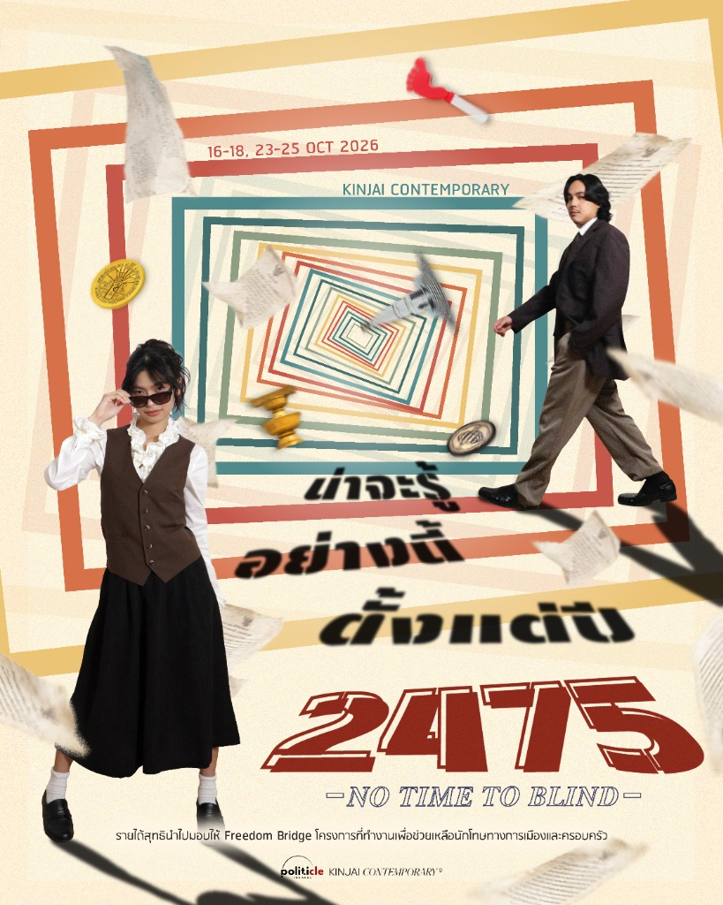

เมื่อ “มารีญา” นักเคลื่อนไหวทางการเมืองจากอนาคตอันแสนไกล
ตัดสินใจย้อนเวลากลับมายังสยามในปี 2475
ด้วยความเชื่ออันแรงกล้าว่าหากแก้ไขอดีตที่ผิดพลาดได้
อนาคตย่อมเปลี่ยนแปลงไปในทางที่ดีขึ้น
ทว่า เธอกลับต้องถูกขัดขวางโดย “นครินทร์” “เอก” และ “หมอ”
เหล่าสุภาพบุรุษแห่งองค์กรปริศนา
ผู้เดินทางข้ามเวลามาเพื่อปกป้องประวัติศาสตร์ที่เป็นอยู่
เพราะสำหรับพวกเขา “ทุกสิ่งที่เกิดขึ้น ย่อมดีเสมอ”
ขณะเดียวกัน “พลอย” สามัญชนคนธรรมดา ก็ต้องตกกระไดพลอยโจน
ติดหล่มอยู่ท่ามกลางสมรภูมิการเมืองและการแย่งชิงอนาคต
ของคนทั้งสองฝั่ง
When "Marya", a political activist from a distant future,
decides to travel back in time to Siam in 1932,
with the strong belief that fixing the mistakes of the past
can change the future for the better.
However, she is thwarted by "Nakarin", "Aek", and "Mor",
gentlemen of a mysterious organization
traveling through time to protect history as it is,
because to them: "Everything that happens is always for the best."
Meanwhile, "Ploy", an ordinary person, is caught in the middle
of a political battleground and a struggle for the future
between both sides.
Former bestselling romance novelist Jane shifts her genre to politics, only to find her friends and ex-lover—once active campaigners—have completely turned their backs on politics. She must search for answers. เมื่อ 'เจน' อดีตนักเขียนนิยายรัก Bestseller หันมาจับงานเขียนด้านการเมือง แต่ต้องแปลกใจเมื่อเหล่าเพื่อนและอดีตคนรักผู้เคยตื่นตัวกลับหันหลังให้การเมืองโดยสิ้นเชิง เธอจึงต้องออกค้นหาคำตอบ
From Akutagawa's unresolved tragedy to state violence. A young man returns to the crime scene searching for truth, only to confront multiple versions of reality and an ideological test of non-violence. จากโศกนาฏกรรมที่ยังไม่ถูกคลี่คลายของ อะคุตะงะวะ สู่เหตุการณ์ความรุนแรงโดยรัฐ เมื่อชายหนุ่มกลับมายังจุดเกิดเหตุเพื่อค้นหาความจริง ทว่ากลับต้องเผชิญกับความจริงหลายชุดและการต่อสู้ทางอุดมการณ์
From Akutagawa's unresolved tragedy to state violence. A young man returns to the crime scene searching for truth, only to confront multiple versions of reality and an ideological test of non-violence. จากโศกนาฏกรรมที่ยังไม่ถูกคลี่คลายของ อะคุตะงะวะ สู่เหตุการณ์ความรุนแรงโดยรัฐ เมื่อชายหนุ่มกลับมายังจุดเกิดเหตุเพื่อค้นหาความจริง ทว่ากลับต้องเผชิญกับความจริงหลายชุดและการต่อสู้ทางอุดมการณ์
Nearly four years after the October 6 incident, coup decrees still govern society. A group of lawyers band together to dismantle the lingering legacy of authoritarian power. หลังเหตุการณ์วันที่ 6 ตุลาฯ ผ่านไปเกือบ 4 ปี เมื่อมรดกของคณะรัฐประหารยังคงครอบงำสังคม เหล่านักกฎหมายกลุ่มหนึ่งจึงมารวมตัวกันเพื่อหาทางแก้ไขและลบมรดกบาปในวันนั้น
Politicle Theatre is an alternative theater company of the new generation, founded to create performing arts that are intensely focused on Thai society and politics. We aim to use theater as a bridge for ideas, bringing historical issues that are sometimes overlooked, dusting them off, and telling them from the perspective of ordinary human hearts. Politicle Theatre คือคณะละครทางเลือกของคนรุ่นใหม่ที่ก่อตั้งขึ้นเพื่อสร้างสรรค์ผลงานศิลปะการแสดงที่เข้มข้นไปด้วยประเด็นสังคมและการเมืองไทย เรามุ่งหมายที่จะใช้ละครเวทีเป็นสะพานเชื่อมความคิด ดึงประเด็นประวัติศาสตร์ที่บางครั้งอาจถูกละเลย นำมาปัดฝุ่นและเล่าใหม่ในมุมมองที่เห็นหัวใจและความเป็นมนุษย์ของตัวละคร
We do not offer pre-packaged answers. Each of our works is designed to invite the audience to ask questions, debate, and contemplate together long after the curtains close. พวกเราไม่ได้เสนอคำตอบที่สำเร็จรูป แต่ละผลงานของเราถูกออกแบบมาเพื่อชวนให้ผู้ชมได้ร่วมตั้งคำถาม ถกเถียง และขบคิดร่วมกันภายหลังจากที่ม่านการแสดงปิดตัวลง
Follow our updates, showtimes, and behind-the-scenes rehearsals through our main channels. ร่วมติดตามความเคลื่อนไหว รอบการแสดง และเบื้องหลังการซ้อมของพวกเราได้ผ่านช่องทางหลัก